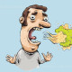

Halitosis
Rx
1.Mouthwash Chlorhexidine Gluconate 0.12% N=1 Daily
نکته1: بررسی از نظر عفونت های دندانی و سینوزیت و ریفلاکس
نکته2: استفاده از دهانشویه و مسواک زدن
نکته3: استفاده از آدامس های خوشبوکننده
1️⃣ خشکی دهان
2️⃣ مشکلات دهان و دندان
3️⃣ سینوزیت
4️⃣ ریفلاکس
5️⃣ دیابت
6️⃣ سیگار
7️⃣ مصرف الکل
8️⃣ Medication:antihistamines, antidepressants
تصویری برای این نسخه موجود نیست.